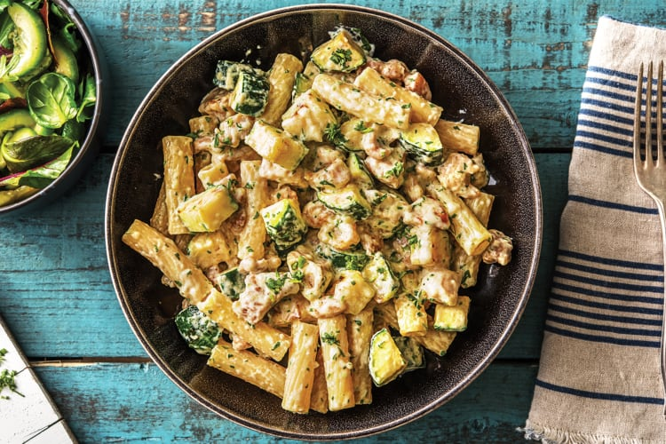

Smoky Sausage Hotpot

Description
A classic combination with chicken and creamy sauce, served atop piping hot pasta – it’s all the comfort both
you and this underrated herb were looking for.
Ingredients
- 2 cloves of garlic
- 1 bunch of tarragon (or 1tsp if using dried tarragon)
- 2 zucchinis
- 1kg chicken thigh
- 2tsp chicken stock dissolved in 4tsp hot water
- 400g rigatoni
- 600g thickene cream
- 4tsp plain flour
Steps
- Bring a large saucepan of salted water to the boil.
- Chop the zucchini into 2cm chunks.
- Chop the chicken into 2cm chunks.
- Pick and finely chop the tarragon leaves.
- Combine the chicken stock and hot water.
- Add the rigatoni to the boiling water and gook for 7-8 minutes. Drain, return to the saucepan and drizzle
with olive oil to prevent sticking.
- While the pasta is cooking, heat a large frypan over a medium-high heat. Add the zucchini (no olive oil) and
cook for 5-6 mintues, or until lightly golden and charred. Transfer to a bowl and season with a pinch of
salt and peppa.
- Return the frying pan to a medium-high heat with a drizzle of olive oil. Add the chicken and cook for 4-5
mins or until browned and cooked through.
- Add the garlic, and cook for 1 minute.
- Pour in the cream and chicken stock, mix well, and reduce the heat to medium to simmer for 5 mins.
- Stir in the tarragon and zucchini, then add the pasta and stir through to coat in the sauce.
- Season to taste with salt and pepper.
Back to the home page!